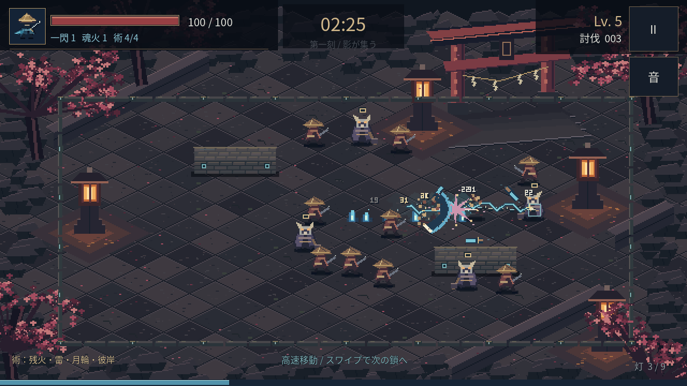

ANDROID / SWIPE & ARTS / 0.3.0
朧火 OBOROBI
スワイプで鎖をつなぎ、群れを駆け抜ける。
蒼い炎・連鎖雷・周回する刃・花の衝撃波を追加。
約78MB · Android 7.0以降 · OpenGL ES 3.0対応端末
Godotのインストールは不要です。

インストール
- 上のボタンでAPKを保存します。アプリ内のブラウザで保存できない場合は、このページをChromeなどのブラウザで開いてください。
- スマホの「ファイル」アプリで、ダウンロードした Oborobi-Android.apk を開きます。
- インストール元の許可を求められた場合は、そのブラウザ／ファイルアプリについて「この提供元を許可」を有効にし、戻って「インストール」を押します。
- アプリ 「朧火」 を開き、「境内へ入る」をタップします。
0.1.1・0.2.0と同じ署名です。インストール済みの「朧火」に上書き更新できます。
遊び方
- 進みたい方向へ短くスワイプ。 指を離す前に鎖を射出します。
- 移動中も、一度指を離して次のスワイプへ。勢いを保って鎖をつなぎ直せます。
- 接続先は大きい鬼面・石垣・外周。小さい敵は鎖を遮らず、高速の鎖移動を止めません。
- 短くタップすると解除。 慣性で少し滑走します。刀と魂火は自動です。
- 魂を集め、3択から強化。最初のレベルアップでは新しい術を選べます。180秒生存でクリア、HP0で落命。結果から再挑戦できます。
4つの新しい術
残火の轍：走った道に蒼い炎。
雷渡り：3体をつなぐ白い雷。
三日月の輪：周囲を巡る3枚の刃。
彼岸の花：花びら状に広がる斬撃。
右上の停止ボタンやAndroidの「戻る」で一時停止。別のアプリへ切り替えた後は、再開ボタンを押してください。
署名・APK内容、Godot上の鎖36項目・術23項目・戦闘31項目・入力12シナリオを検証済み。Android端末上での0.3.0の起動・性能は未検証です。連続スワイプと術の組み合わせを実機で試すための版です。